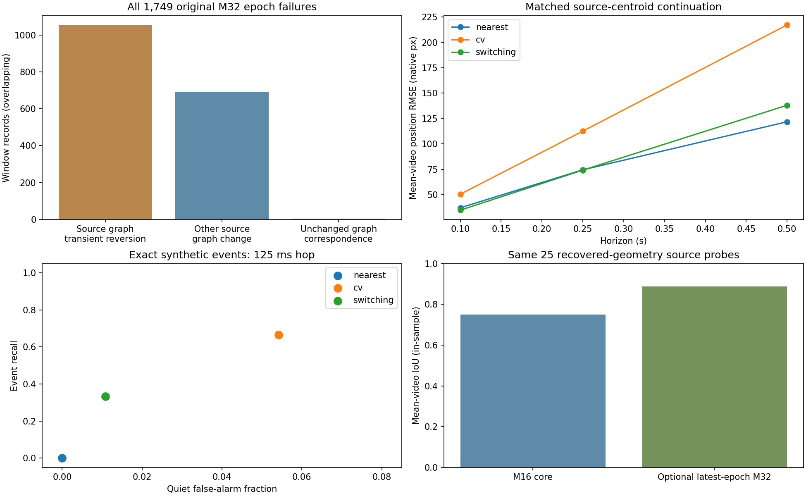
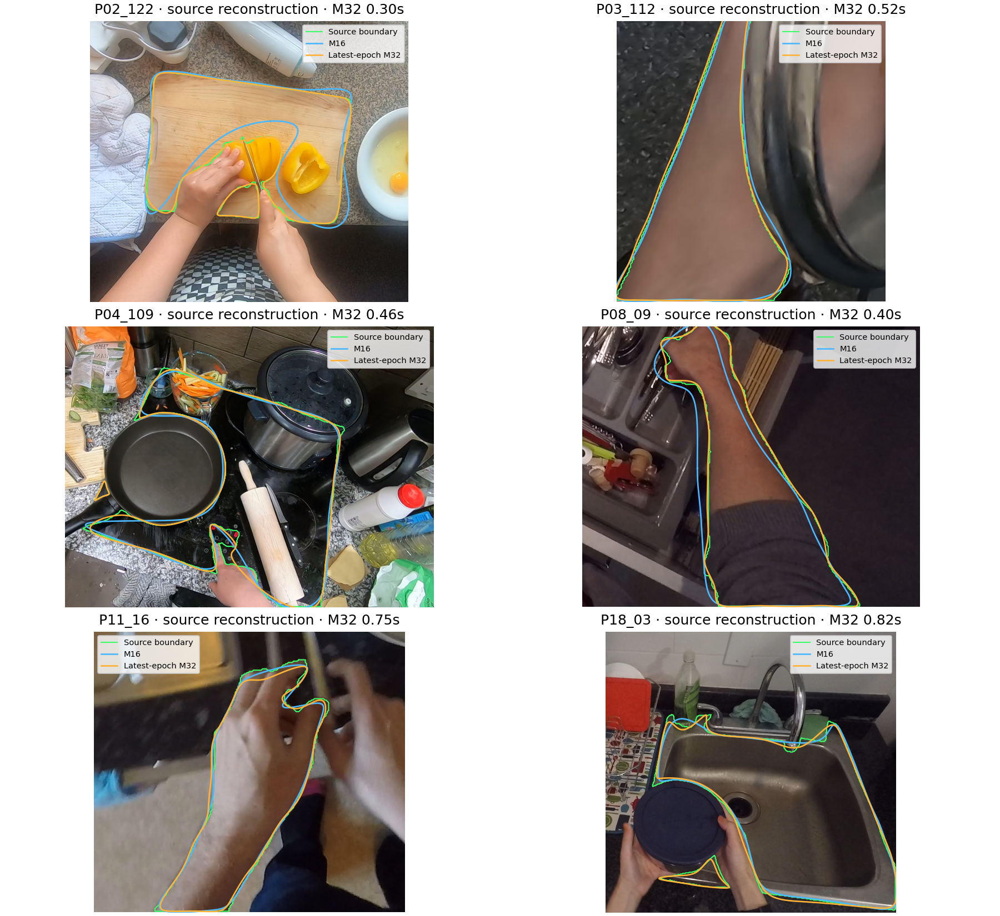

Open bounded Track 1 candidates; no finalization, baseline replacement or Track 2 training.
A: Source-mask ring changes are observed annotation events. Physical birth/death, occlusion and identity causes cannot be resolved from these labels. Variable-duration geometry is a separate latest-epoch view, not a recovered one-second history.
C: M16 carries continuity. M32 is optional, certificate-bound, and its duration, availability and discrete epoch boundaries remain explicit. Missing geometry is None; no joint calibrated geometry covariance is invented.
B: Fixed causal hypothesis bank and confidence-gated background alignment are unpromoted ablations. Hypothesis weights are uncalibrated model weights. The camera-relative view is 2D alignment, not metric object motion.
D: Association scores use provisional annotation-chain identities. Contact relations only select review cases; they cannot certify boundary distances, physical events or consequential identity swaps.
All sequence counts overlap. Participant/video/episode are the uncertainty units. Two validation participants are insufficient for strong independent claims.
95% simultaneous source-trajectory split-conformal calibration has only five training participant units. The finite-sample order statistic is out of range, so the honest bound is unbounded, not a finite 95% guarantee.
Genuinely fresh participants remain reserved but unacquired; no fresh labels are used for development. Independent motion/contact/identity review remains pending.
| source | cause | windows |
|---|---|---|
| v2 | observed_source_ring_graph_change | 692 |
| v2 | source_topology_change_fragmentation_or_occlusion_hypothesis | 1053 |
| v2 | unchanged_topology_correspondence_candidate | 4 |
| context | observed_source_ring_graph_change | 302 |
| context | source_topology_change_fragmentation_or_occlusion_hypothesis | 561 |
| context | unchanged_topology_correspondence_candidate | 1 |
| source | split | core_length16_sequences | all_optional_compound_geometry | single_compound_epoch |
|---|---|---|---|---|
| v2 | train | 0 | 0 | 0 |
| v2 | validation | 0 | 0 | 0 |
| context | train | 266 | 104 | 99 |
| context | validation | 46 | 5 | 5 |
All optional-geometry coverage may contain explicit topology resets. Only the last column retains one continuous compound epoch.
| cohort | horizon_seconds | mean_video_rmse_native_px | method | queries | split | videos |
|---|---|---|---|---|---|---|
| raw | 0.1 | 50.440982461492496 | cv | 185 | validation | 2 |
| raw | 0.1 | 37.05782870113429 | nearest | 185 | validation | 2 |
| raw | 0.1 | 34.71094076028322 | switching | 185 | validation | 2 |
| raw | 0.25 | 112.60774230865852 | cv | 175 | validation | 2 |
| raw | 0.25 | 74.47501683612653 | nearest | 175 | validation | 2 |
| raw | 0.25 | 74.16375157664396 | switching | 175 | validation | 2 |
| raw | 0.5 | 217.33718131244822 | cv | 158 | validation | 2 |
| raw | 0.5 | 121.8262727525333 | nearest | 158 | validation | 2 |
| raw | 0.5 | 138.12255347135414 | switching | 158 | validation | 2 |
| camera_supported | 0.1 | 25.251912957672214 | camera_switching | 122 | validation | 2 |
| camera_supported | 0.1 | 26.293912575604352 | cv | 122 | validation | 2 |
| camera_supported | 0.1 | 20.767335813537507 | nearest | 122 | validation | 2 |
| camera_supported | 0.1 | 20.416107468035754 | switching | 122 | validation | 2 |
| camera_supported | 0.25 | 55.73699148867576 | camera_switching | 116 | validation | 2 |
| camera_supported | 0.25 | 58.73767883154281 | cv | 116 | validation | 2 |
| camera_supported | 0.25 | 47.65505082751675 | nearest | 116 | validation | 2 |
| camera_supported | 0.25 | 48.961431502123844 | switching | 116 | validation | 2 |
| camera_supported | 0.5 | 106.27021376614914 | camera_switching | 105 | validation | 2 |
| camera_supported | 0.5 | 111.1852977088264 | cv | 105 | validation | 2 |
| camera_supported | 0.5 | 94.87777669262283 | nearest | 105 | validation | 2 |
| camera_supported | 0.5 | 95.93225071826141 | switching | 105 | validation | 2 |
| episodes | event_recall | hop_seconds | method | position_rmse_px | quiet_false_alarm_fraction | split | velocity_rmse_px_s |
|---|---|---|---|---|---|---|---|
| 30 | 0.0 | 0.125 | nearest | 13.870660569216525 | 0.0 | synthetic_validation | 185.52085654309292 |
| 30 | 0.6666666666666666 | 0.125 | cv | 13.304624123612259 | 0.0541887677545623 | synthetic_validation | 172.51458540055427 |
| 30 | 0.3333333333333333 | 0.125 | switching | 10.34815155315195 | 0.01085186806646465 | synthetic_validation | 152.39269149496678 |
| 30 | 0.0 | 0.25 | nearest | 20.999592784336283 | 0.0 | synthetic_validation | 185.43862474769085 |
| 30 | 0.6666666666666666 | 0.25 | cv | 21.357264654958282 | 0.07198584617607334 | synthetic_validation | 179.41190550011424 |
| 30 | 0.3333333333333333 | 0.25 | switching | 15.62443199240832 | 0.017646625405246096 | synthetic_validation | 157.4758581596803 |
| split | method | mean_video_source_chain_correct_fraction | mean_video_abstention_fraction |
|---|---|---|---|
| train | geometry | 0.9759316588749595 | 0.00953479276874707 |
| train | geometry_appearance | 0.9859978307831831 | 0.009822196737132628 |
| train | geometry_appearance_motion_uncertainty | 0.8752424943977644 | 0.12209037001665804 |
| validation | geometry | 0.9863945578231292 | 0.006802721088435382 |
| validation | geometry_appearance | 0.9897959183673469 | 0.010204081632653073 |
| validation | geometry_appearance_motion_uncertainty | 0.7950492972519404 | 0.20054541640444729 |
Accepted independent references: 0. Source contact proposals: 163.

Source and synthetic gains do not pass scientific gates. Switching motion loses event recall; camera compensation does not consistently win; independent contact and identity labels remain absent. Existing defaults are preserved.
Readable result report · Scientific gate ledger · Support intersections/unions · Baseline preservation · Subset determinism
correspondence.json · geometry_quality.json · camera.json · motion.json · synthetic_motion.json · tiered.json · association.json · independent_evaluation.json · verification.json · independent_review/README.md